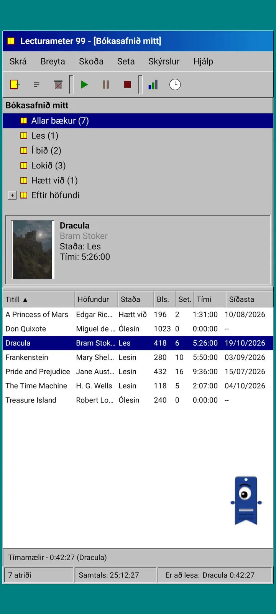
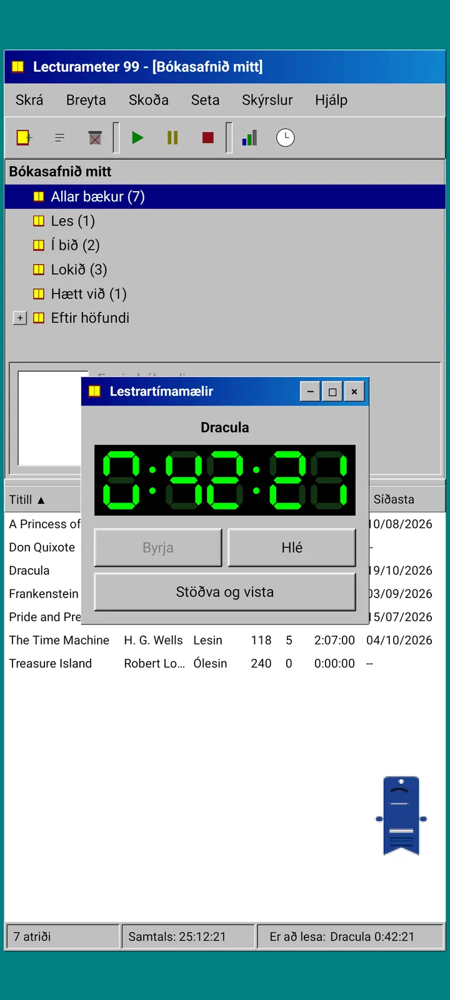
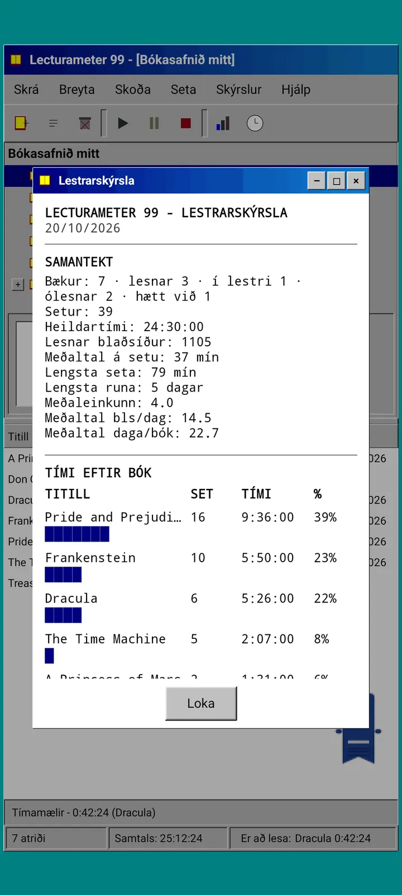
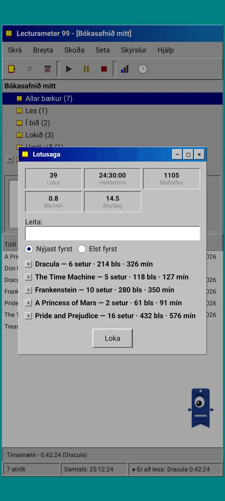
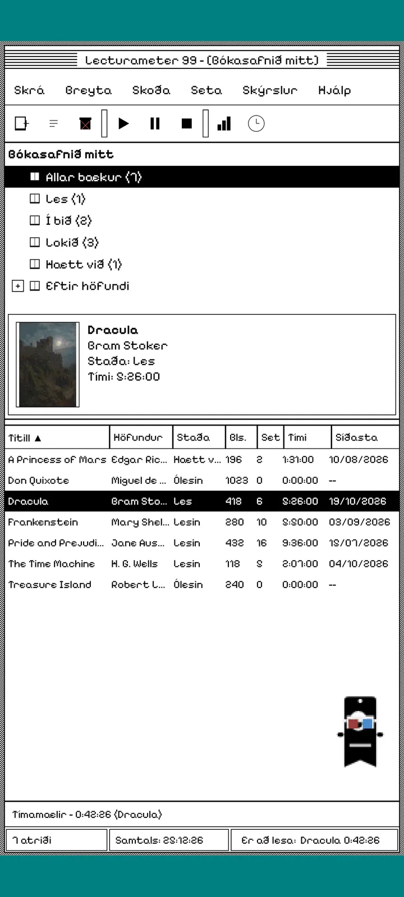
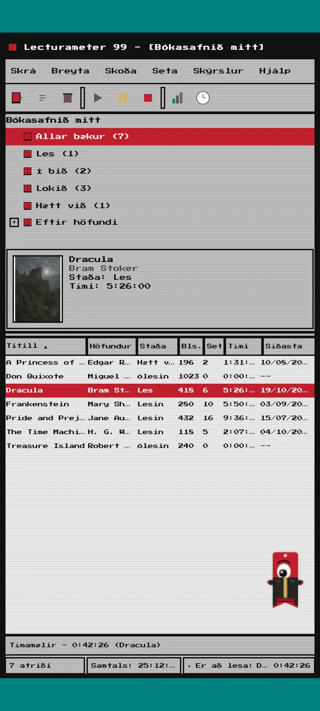
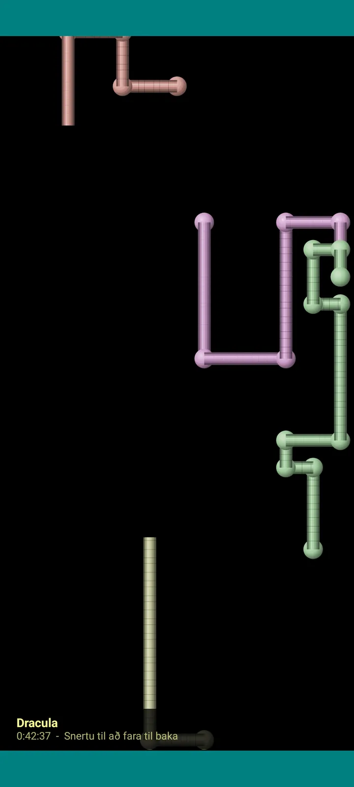

Lecturameter 1999
Lecturameter eins og þú hefðir sett það upp af geisladiski árið 1999. Annar biðlari fyrir forritið, með gluggum, valmyndum og töflum, sem opnar raunveruleg öryggisafrit þín.

Hvað þetta er
Borðtölvuforrit frá lokum tíunda áratugarins sem keyrir í símanum þínum. Einn gluggi yfir blágrænu skjáborði, valmyndastika, tækjastika, möpputré, þétt tafla og stöðustika.
- Bókasafnstré: allar bækur, les, í bið, lokið, hætt við og eftir höfundi
- Tafla með titli, höfundi, stöðu, blaðsíðum, lotum, tíma og síðasta lestri. Ýttu á dálkhaus til að raða
- Raunveruleg bókaleit, með sama vörulista og Lecturameter notar
- Flytur inn og út öryggisafrit Lecturameter og CSV-skrá Goodreads. Gögnin þín fara inn og út án þess að neitt tapist

Af hverju þetta er til
Tilraun: að endurbyggja hugmyndina að Lecturameter frá grunni út frá gjörólíkum hönnunarforsendum, án þess að snerta raunverulega forritið. Af öllum endurtúlkununum líkaði mér 1999-útgáfan best, svo ég kláraði hana sem skemmtilega æfingu og gerði úr henni fullbúinn biðlara. Hún er einfaldari en Lecturameter viljandi: þetta er tilraun og verður í grunninn ekki þróuð frekar.
- Tímamælir í fljótandi glugga með grænum LCD-skjá. Hann færist til, minnkar niður í verkstiku og heldur áfram að telja í stöðustikunni
- Þegar þú stöðvar spyr glugginn til að vista lotu um blaðsíðurnar og reiknar út hraðann, alveg eins og Lecturameter
- Vistaðar lotur eru Lecturameter-lotur: þær skila sér aftur í nútímaforritið ef þú flytur út öryggisafrit úr Lecturameter 1999 og flytur það inn í Lecturameter.

Lestrarskýrsla
Tölfræðin er prentuð skýrsla: yfirlit, tími á bók með kubbasúlum, hraði í blaðsíðum á dag, dagatal ársins teiknað með stöfum og síðustu sjö dagar.

Lotusaga
Lotur flokkaðar eftir bók í tré með plús og mínus, með fimm tölum efst: lotur, heildartími, blaðsíður, blaðsíður á mínútu og blaðsíður á dag.

Vista lotu
Dagsetning, mínútur, fyrsta og síðasta blaðsíða, athugasemd. Yfirlitið reiknar út blaðsíður og hraða á meðan þú skrifar. Ef þú nærð síðustu blaðsíðunni er spurt hvort þú hafir klárað bókina.

Pagi 99
Pagi ferðast líka til 1999: pixlaður og laus á skjánum eins og skrifstofuaðstoðarmenn þess tíma. Þú getur dregið hann til, hann segir eitthvað þegar þú ýtir á hann og sýnir ábendingar í gulum blöðrum.
Þemu
Classic 98 er ókeypis og sjálfgefið. Pakkinn bætir við sex í viðbót, hvert með sinn bakgrunn og sín hljóð.

Veldu það í Skoða-valmyndinni
Skoða, Þema... opnar glugga með þemunum sjö. Breytingin nær til allra glugga, tímamælisins og Pagi í einu.
- Classic 98, ókeypis og sjálfgefið: gráir gluggar, dökkbláar titilstikur og blágrænt skjáborð
- Þemapakki: 1984, Gumdrop, Memory, Towers, Core og 8-bit
- Hvert þema kemur með eigin skjáborðsbakgrunn og eigin hljóð fyrir snertingar, glugga og tímamælinn
- Skoða, Þemahljóð slekkur á hljóðunum ef þú lest í þögn

Classic 98
Gráir gluggar, dökkbláar titilstikur og blágrænt skjáborð. Ókeypis, þetta er það sem forritið opnast með.

1984
Svarthvítt eins bita skjáborð, með punktamynstri og ferköntuðum gluggum.

Gumdrop
Gegnsætt litað plast, ávalir hnappar og rendur í bakgrunni.

Memory
Valmyndir leikjatölvu með diskum frá tíunda áratugnum, í dökkbláum tónum.

Towers
Önnur leikjatölva með diskum frá tíunda áratugnum, næturblá með ljósbláum línum.

Core
Svört og græn skipanalína, eins og skjár sem slokknar aldrei.

8-bit
Feitir pixlar, fáir litir og kubbslegir stafir.

Prófaðu áður en þú borgar
Ýttu á læst þema og allt forritið skiptir yfir í það. Ef þú lokar án þess að kaupa kemur fyrra þemað aftur.
Skjávarar
Þeir birtast aðeins á meðan tímamælirinn gengur og þú lætur símann í friði. Þeir bíða í 1, 3 eða 5 mínútur, eða aldrei. Ein snerting færir þig til baka og tímamælirinn heldur áfram að telja.

Fljúgandi bækur
Pixlabækur sem blaka kápunum yfir svartan skjá.

Stafageimur
Stafir úr mörgum stafrófum sem svífa fram hjá, eins og stjörnuhiminn.

Blaðsíðupípur
Pípur úr blaðsíðum sem teikna sig sjálfar þar til skjárinn fyllist.

Skoppandi Pagi
Pagi sem skoppar af brúnum skjásins.

Lestrarklukka
Tími lotunnar í stórum LCD-tölustöfum.

Búningar fyrir Pagi
Átta búningar fyrir Pagi 99. Þú velur þá í Skoða, Búningur Pagi..., og getur mátað þá áður en þú borgar.
- Kassettutæki
- Derhúfa öfug
- 3D-gleraugu
- Neon-sólgleraugu
- Disklingur í hendi
- Leðurjakki
- Vasagæludýr
- Pappakóróna
Verslun
Forritið er ókeypis og fullbúið til að skrá lesturinn. Það sem þú getur keypt breytir aðeins útlitinu.
Allt forritið, án tímatakmarka.
- Bókasafn, leit, tímamælir og lotur
- Lestrarskýrsla og lotusaga
- Öryggisafrit Lecturameter og CSV frá Goodreads, inn og út
- Classic 98-þema og Pagi 99
- Enginn reikningur og engar auglýsingar
Einskiptisgreiðslur, engar áskriftir.
- Þemapakki, €3.49: 6 þemu með bakgrunni og hljóðum, auk skjávaranna
- Skjávarar, €1.99: skjávararnir 5
- Búningar Pagi, €1.99: búningarnir 8
- Allt 1999, €4.49: þemu, skjávarar og búningar
Valfrjálst þjórfé í Hjálp-valmyndinni, ef þú vilt bjóða mér upp á kaffi.
Hægt er að prófa þemu og búninga í beinni áður en þú borgar. Ef þú lokar án þess að kaupa kemur það sem þú varst með aftur.
Hvað breytist miðað við Lecturameter
Eins og í Lecturameter
- Sömu gögn: bækur, lotur, stöður, einkunnir og athugasemdir. Öryggisafritsskráin er sú sama í báðum forritum.
- Bókaleit eftir titli eða höfundi.
- Alvöru tímamælir: hann heldur áfram að telja í bakgrunni og jafnvel þótt þú lokir forritinu.
- Enginn reikningur, engar auglýsingar, engin tenging nema til að leita að bókum.
- Sömu tungumál og Lecturameter.
Aðeins í 1999-útgáfunni
- Borðtölvuviðmót frá 1999. Ekkert Material.
- Alvöru gluggar: þú dregur þá til, minnkar þá og lokar þeim með krossinum.
- Lestrarskýrsla í texta, með dagatali teiknuðu með stöfum.
- Samhengisvalmynd með löngu haldi og flýtilyklar ef þú tengir lyklaborð.
- Pixlaður Pagi 99 með ábendingarblöðrum.
- Valfrjáls þemu með eigin bakgrunni og hljóðum, skjávarar á meðan tímamælirinn gengur og búningar fyrir Pagi.
Það sem er sleppt, viljandi
- Ekkert Pro og engin áskrift. Það er allt ókeypis að skrá lesturinn, verslunin selur bara útlit.
- Engar áskoranir, bingó, árlegt Wrapped eða græjur.
- Engin lota í kafi, umhverfishljóð eða öryggisafrit á Google Drive. Öryggisafritið er vistað sem skrá.
Lokuð prófun
Lecturameter 1999 er í lokaðri prófun á Google Play. iOS kemur seinna, engin dagsetning enn.
- Gakktu í hópinn groups.google.com/g/lecturameter-1999
- Skráðu þig sem prófara á play.google.com/apps/testing/com.lecturameter.r1999
- Settu það upp af Google Play
Í lokaðri prófun á Google Play, iOS seinna. Lestu bloggfærsluna til að sjá hvaðan þetta kemur og við hverju má búast.